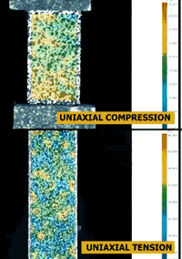
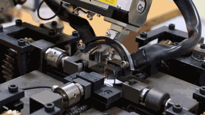
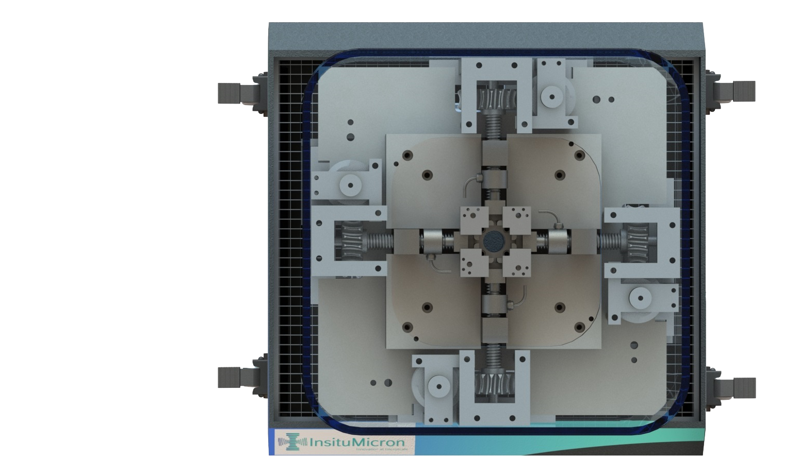

Next Generation
Mechanical Testing
Unravelling the unknown & aiding groundbreaking research.
Our Products Contact Us
Unravelling the unknown & aiding groundbreaking research.
Our Products Contact Us
Create innovative products which aid in augmented materials research.
Partner with academia and industry to enhance product capabilities.
Make our technologies accessible to all research institutes.
Strategically expand the horizon of materials testing and characterization.

Testing in-service components is essential to understand failure. Miniaturised testing allows site-specific characterisation — vital to comprehend material behaviour under thermal and mechanical stresses during manufacturing. Additive manufacturing also demands this because of its inherent microstructural variability.
In-situ characterisation augments the information obtained because it is carried out under real-time loading conditions. The vital data collected is essential for identifying failure mechanisms and allows material manufacturers to design better materials. Particularly powerful for measuring single crystal elastic constants — challenging and expensive to determine by any other method.

Every design decision in our instruments was made to give researchers better data with less friction.

The miniature fixture integrates seamlessly with XRD, Raman, and optical microscope stages — no modifications to your existing equipment needed.
One instrument handles tension, compression, and bending — our innovative clamp design eliminates the need for multiple setups.
Optimised load train and Class 0.2 load cell ensure consistent, repeatable results — every single test.
Our custom-built software makes experiment setup, live data monitoring, and export straightforward — even for first-time users.
Our instruments are built for the problems that conventional testing can't reach — across materials, industries, and research domains.
Numbers don't lie. Here's what switching to miniature specimens actually delivers.
Miniature specimens use a fraction of the raw material compared to ASTM sub-sized specimens. For plate and flat geometry types, the savings are even greater.
Less material to machine means faster turnaround, lower machining costs, and more specimens per campaign — accelerating your R&D cycle significantly.
Compact fixture fits directly on XRD goniometers, Raman stages, and optical microscopes — run mechanical and structural characterisation simultaneously.
Additive manufacturing is expensive and slow. Miniature specimens cut printing time and material cost by up to 90% — making iterative process qualification actually feasible.
Smaller specimens mean less energy to machine, print, and test. A measurable step toward sustainable materials R&D — without compromising data quality.
✓ More sustainable. More eco-friendly. No trade-offs.
From IIT labs to industrial R&D — teams across academia and manufacturing rely on InsituMicron.